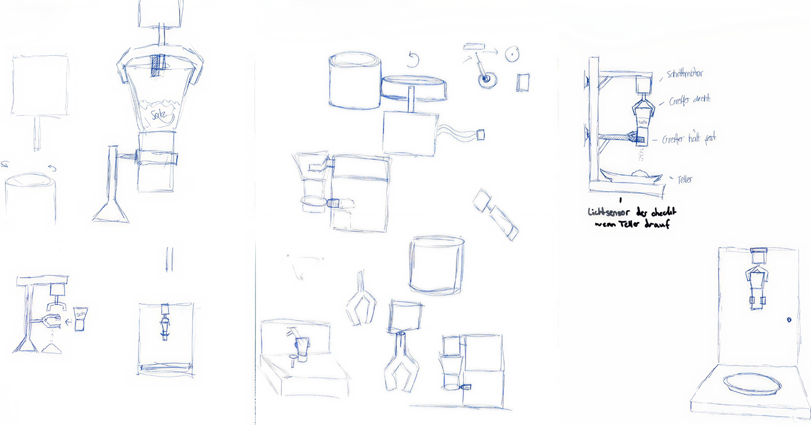
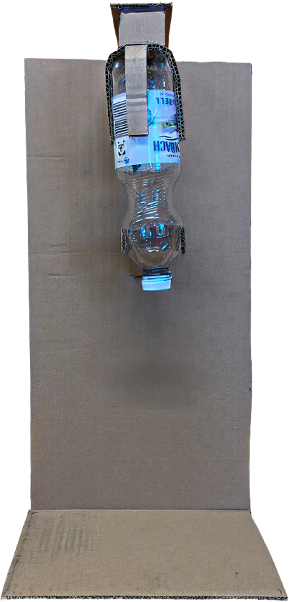
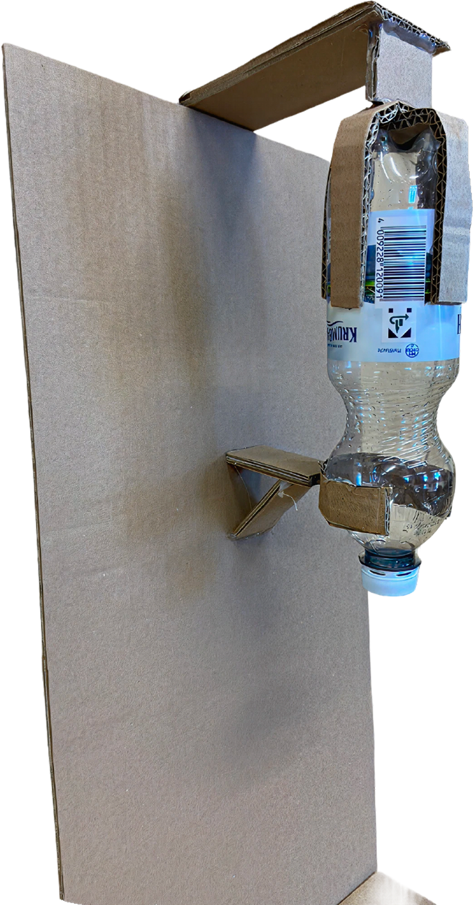
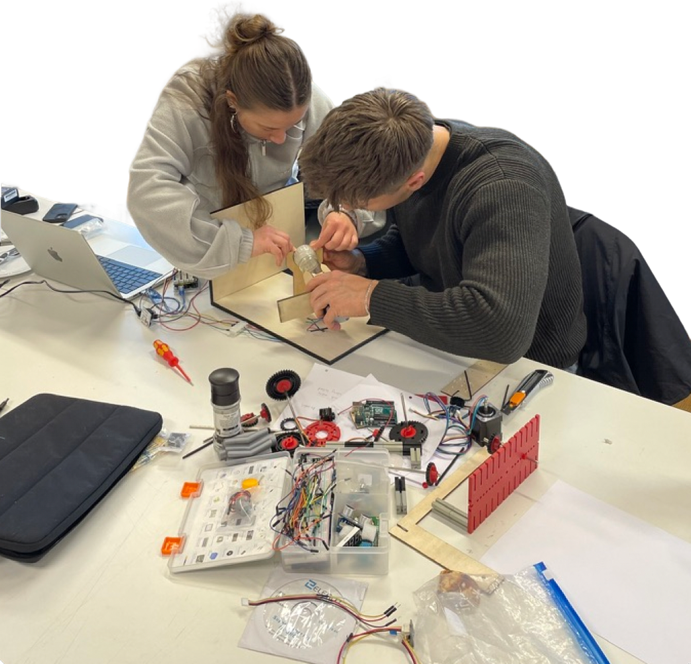
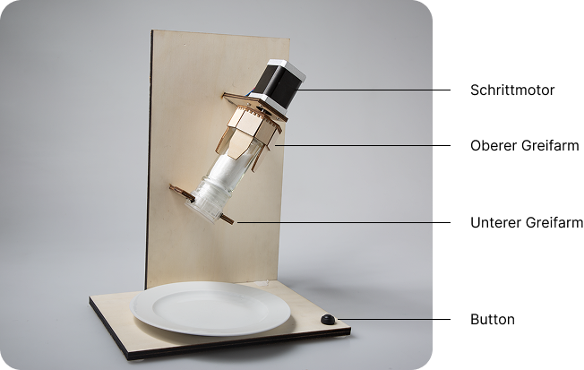

Salt.
Im Rahmen des Mechatronik-Workshops entwickelten wir ein Gerät, das eine Salzmühle bedient. Ausgangspunkt war die Beobachtung der menschlichen Drehbewegung beim Würzen. Unser Ziel war nicht Effizienz, sondern die möglichst authentische Nachahmung dieser Bewegung.
Concept, Prototyping, Construction, Programming
1 Week Workshop · SoSe 2026
Arduino, Stepper Motor, Prototyping, Adobe Illustrator


Herausforderung
Im Rahmen des Mechatronik-Workshops entwickelten wir ein Gerät, das eine Salzmühle bedient. Ausgangspunkt war die Beobachtung der menschlichen Drehbewegung beim Würzen. Unser Ziel war nicht Effizienz, sondern die möglichst authentische Nachahmung dieser Bewegung.
Erkundung
Zu Beginn haben wir verschiedene Ansätze skizziert und einen ersten Prototypen aus Pappe gebaut, um Proportionen, Aufbau und Funktionsprinzip schnell zu testen. Dabei zeigte sich früh, dass der erste Greifmechanismus die Mühle nicht stabil genug fixierte und in der Form weiterentwickelt werden musste.



Arbeitsprozess
Im weiteren Verlauf lag der Fokus auf der technischen und konstruktiven Umsetzung. Die größte Herausforderung war, genügend Kraft für die Drehbewegung zu erzeugen und gleichzeitig eine stabile Halterung für die Mühle zu entwickeln. Durch mehrere Anpassungen an Greifmechanismus, Aufbau und Programmierung konnten wir einen funktionierenden Prototypen realisieren, der die Bewegung bewusst leicht ungenau und dadurch menschlicher nachahmt.

Finaler Prototyp
Das Ergebnis ist ein mechatronischer Prototyp, der eine Salzmühle per Knopfdruck in einer menschenähnlichen Bewegung bedient. Auch wenn das System technisch noch nicht perfekt war, konnte die Grundidee überzeugend umgesetzt und im Ausstellungskontext präsentiert werden. Der Workshop hat vor allem gezeigt, wie wichtig frühe Tests und pragmatische Entscheidungen sind, um in kurzer Zeit von einer Idee zu einem funktionierenden Objekt zu gelangen.
